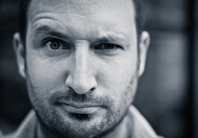

Speakers
Andy McMillan
The archives of this moment in our profession, every issue captures the voices of six authors who each write two pieces: a
substantial article and an illuminating life lesson. Each article is paired with the work of a top, talented illustrator.
The Manual is an A5 (~6 × 8") hardback book with a textured, handcrafted feel. Using traditional sewn binding and a partially
cotton-wrapped exposed binder’s board cover, it holds nearly 100 pages of 130gsm Munken Pure stock. Each issue has its own color,
from the beautiful foil-stamped design on the cover to the spine and illustrations. Line up the full spectrum of these collectible
artifacts on your shelf, beginning with the first issue.
Morgan Allan Knutson
A condensed uppercase typeface with regular, thin, inline, and bold weights.
Simply include this image link code in the html for your site. A black censored bar will appear. Use the absolute positioning
parameters to place the bar over your logo. Use width and height parameters to fit it to your site. That's it! You can also modify
our image yourself if you prefer, and link to the same URL that appears in the code above.
Chris Murphy
Graphic designer and illustrator Simon C Page has put together a wonderful series of ten prints to celebrate International Year of
Chemistry, 2011. Available to buy as a limited edition series of prints, they’re guaranteed to delight that special designer
someone in your life come Christmas morning. /* Hint. */
Cole Henley
Back in 2009 a small group appeared on Flickr featuring parodies of the infamous Keep Calm and Carry On poster. I was doing a lot
of tongue-in-cheek digital illustration at the time so over a few days submitted a number of my own contributions to the group.
Some of these have become quite popular, one receiving over 18,000 views.
Over the last two years a number of folk have got in touch to see if any of these designs are available to buy as prints or tees.
I have dabbled with the idea and put a couple of tee designs up on Spreadshirt last year. However I recently decided to try and
take this a bit more seriously so have commissioned some screen prints of two of the more popular designs which are due back from
the printer any day now.

Doc Parsons
Look at your typical website. Unless you're looking at icanhascheezburger.com then the majority of the pages will be text.
This is why typography is an integral part of what we do and we digitally build upon techniques that have been honed from centuries of man's love of type.
We use the latest and greatest technologies to ensure your site sits happily in The Semantic Web. You'll be fully covered on all the latest browsers, but what's that? You need IE6 support too? We sympathise and can help. That's what we're here for.
David Rice
Dr. Ice, Ricicle, DJ JR, The Artist Formerly Known as David J. Rice centuries of man's love of type.
Kyle Meyer
Each morning begins with a 10 a.m. breakfast at Kanye’s Diamondhead residence. Pusha, Tip, RZA, Cudi, Cons, and Kanye’s crew
slowly assemble to enjoy the absurdly tasty cooking of Kanye’s in-house chefs. If you’re smart, you order the French toast
with the flambéed banana. An hour later, Kanye pulls up in his Porsche Panamera, fresh from the studio. That’s right, from the
studio. During my five days in Hawaii, Kanye never slept at his house, or even in a bed. He would, er, power-nap in a studio
chair or couch here and there in 90-minute intervals, working through the night. Engineers remained behind the boards 24 hours
a day.
Mike Jardine
Mark is a user interface designer who has been designing and building websites for over 10 years. He also enjoys drawing, photography, video games, and cars. He has a passion for creating things in all mediums. Mark lives in San Jose, CA with his wife, newborn son, and Shiba Inu.
Wilson Miner
I’m a designer and web developer in San Francisco. I’m currently head of design for Rdio, a new social music service.
I was the original designer for EveryBlock, a site that gathers local news and public information and filters it by location
to provide “a news feed for your block.” Before co-founding EveryBlock in 2007, I was an interactive designer for Apple,
where I worked on the first comprehensive redesign of apple.com in more than 10 years.
Before I moved to San Francisco in 2006, I worked for the online division of The Lawrence Journal-World, a newspaper in
Lawrence, Kansas. I was one of four people that helped create the original version of the Django web framework.
I like pie.